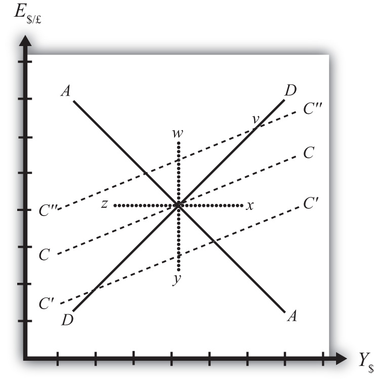

In later chapters we will use the AA-DD model to describe the effects of policy changes on macroeconomic variables in an open economy. The two most important macro variables are the exchange rate and the current account (trade) balance. The effects of changes on the exchange rate are vividly portrayed in the AA-DD diagram since this variable is plotted along the vertical axis and its value is determined as an element of the equilibrium. The current account (CA) variable is not displayed in the AA-DD diagram, but with some further thought we can devise a method to identify the current account balance at different positions in the AA-DD diagram.
First, note that there is no “equilibrium” current account balance in a floating exchange rate system. Any balance on the current account is possible because any balance can correspond to balance on the balance of payments. The balance of payments is made up of two broad subaccounts: the current account and the financial account, the sum of whose balances must equal zero. When the balances sum to zero, the foreign demand for domestic goods, services, income, and assets is equal to domestic supply of goods, services, income, and assets. Thus there must always be “balance” on the balance of payments regardless of the balances on the individual subaccounts.
An iso-CAB lineA line drawn on an AA-DD diagram representing a set of points along which the current account balance (CAB) is the same. is a line drawn on an AA-DD diagram, Figure 20.11 "Iso-CAB Lines in an AA-DD Diagram", representing a set of points along which the current account balance (CAB) is the same. Note that “iso” is a prefix that means the same. In the adjoining diagram, we have superimposed three-dotted iso-CAB lines labeled CC, C′C′, and C″C″. Each line represents a set of GNP and exchange rate combinations that generate the same balance on the current account. The higher the CAB line, the larger is the balance on the current account. Thus the CAB balance on C″C″ is greater than the balance along CC. Also note that each CAB line is positively sloped with a slope less than the slope of the DD curve. Next, we’ll continue with a justification for this description.
Figure 20.11 Iso-CAB Lines in an AA-DD Diagram
Consider the superequilibrium point at the intersection of AA and DD. The positions of these two curves are determined by the values of the exogenous variables in the model, including the domestic price level (P$), the foreign price level (P£), tax revenues (T), and transfer payments (TR), among others. The intersection of the two curves determines the equilibrium GNP level (Y$) and the exchange rate (E$/£) (not labeled in diagram). Recall from Chapter 20 "The AA-DD Model", Section 20.2 "Derivation of the DD Curve" that the DD curve is derived from the aggregate demand function, one component of which is the current account function. The current account function, as shown below, is a function of all the variables listed immediately above:
Thus at the intersection of AA and DD there are presumed known values for the exogenous variables and determined values for the endogenous variables, E$/£ and Y$.
All these values could, in principle, be plugged into the current account demand function (CAD) to determine the CA balance at the equilibrium. Let’s assume that value is given by K, as shown in the above expression.
Now let’s consider movements in the superequilibrium to other points on the diagram. Let’s suppose that the equilibrium moved to point x directly to the right. That could arise from a rightward shift of DD and an upward shift of AA. We will also assume that this shift did not arise due to changes in P$, P£, T, or TR, the other exogenous variables that affect the current account. (More on this issue below.) One possibility is an increase in the money supply and an increase in investment demand. Note that these shifts are not depicted.
At point x, GNP is higher while the exchange rate and the other exogenous variables are the same as before. Since an increase in Y$ raises disposable income, which reduces current account demand, the current account balance must be at a lower level at point x compared to the initial equilibrium.
If the equilibrium had shifted to point z instead, then GNP is lower while the exchange rate and the other exogenous variables are the same as before. Since a decrease in Y$ lowers disposable income, which raises current account demand, the current account balance must be at a higher level at point z compared to the initial equilibrium.
Next, suppose the equilibrium had shifted to point y instead. In this case, the exchange rate (E$/£) is lower while GNP and the other exogenous variables are the same as before. Since a decrease in E$/£ reduces the real exchange rate, which reduces current account demand, the current account balance must be at a lower level at point y compared to the initial equilibrium.
Finally, suppose the equilibrium had shifted to point w. In this case, the exchange rate, E$/£, is higher while GNP and the other exogenous variables are the same as before. Since an increase in E$/£ raises the real exchange rate, which increases current account demand, the current account balance must be at a higher level at point y compared to the initial equilibrium.
Since a movement to w and z results in an increase in the current account balance, while a shift to x or y causes a reduction in the balance, the line representing a constant CAB must be positively sloped.
Another way to see this is to use the CAD function above. Suppose the CAB is originally at the value K. If the exchange rate (E$/£) rises, ceteris paribus, then CA will rise. We can now ask how GNP would have to change to get back to a CA balance of K. Clearly, if Y rises, disposable income rises and the current account balance falls. Raise GNP by precisely the right amount, and we can get the CAB back to K. Thus an increase in E$/£ must accompany an increase in GNP to maintain a fixed current account balance and therefore an iso-CAB line must be positively sloped.
The last thing we need to show is that the iso-CAB line is less steeply sloped than the DD line. Suppose the economy moved to a point such as v, which is on the same DD curve as the original superequilibrium. Recall from Chapter 20 "The AA-DD Model", Section 20.2 "Derivation of the DD Curve", the DD curve is derived from a change in the exchange rate and its effect on equilibrium GNP in the G&S market alone. The increase in the exchange rate causes an increase in current account demand through its effect on the real exchange rate. This causes an increase in aggregate demand, which inspires the increase in GNP. When equilibrium is reached in the G&S market, at point v, aggregate supply, Y, will equal aggregate demand and the following expression must hold:
The left side is aggregate supply given by the equilibrium value at point v and the right side is aggregate demand. Since GNP is higher at v, consumption demand (CD) must also be higher. However, because the marginal propensity to consume is less than one, not all the extra GNP will be spent on consumption goods; some will be saved. Nevertheless, aggregate demand (on the right side) must rise up to match the increase in supply on the left side. Since all the increase in demand cannot come from consumption, the remainder must come from the current account. This implies that a movement along the DD curve to v results in an increase in the current account balance. It also implies that the iso-CAB line must be less steeply sloped than the DD curve.
The iso-CAB line can be used to assess the change in the country’s current account balance from any exogenous variable change except changes in P$, P£, T, and TR. The reason we must exclude these variables is because the current account demand function is also dependent on these exogenous variables. If tax revenues increased, for example, all the iso-CAB lines would shift, making it much more difficult to pinpoint the final effect on the current account balance.
However, for monetary policy changes and government spending fiscal policy changes, the iso-CAB line will work. Anytime the superequilibrium shifts above the original iso-CAB line, the economy will move onto another iso-CAB line with a higher balance. (This is like the shift to point v in Figure 20.11 "Iso-CAB Lines in an AA-DD Diagram".) Recall that the CA = EX − IM, which can be positive or negative. If CAB were in surplus originally, an increase in the CAB (as with a movement to v) would imply an increase in the CA surplus. However, if the CAB were in deficit originally, then an increase in CAB implies a reduction in the deficit. If the increase in the CAB were sufficiently large, the CAB could move from deficit to surplus.
In a similar way, anytime the superequilibrium shifts below an initial iso-CAB line, the CAB surplus will fall, or the CAB deficit will rise.
Remember that the iso-CAB line is only used a reference to track the current account balance. The iso-CAB line is not used to determine the superequilibrium. For this reason, the iso-CAB line is plotted as a dashed line rather than a solid line.
Jeopardy Questions. As in the popular television game show, you are given an answer to a question and you must respond with the question. For example, if the answer is “a tax on imports,” then the correct question is “What is a tariff?”